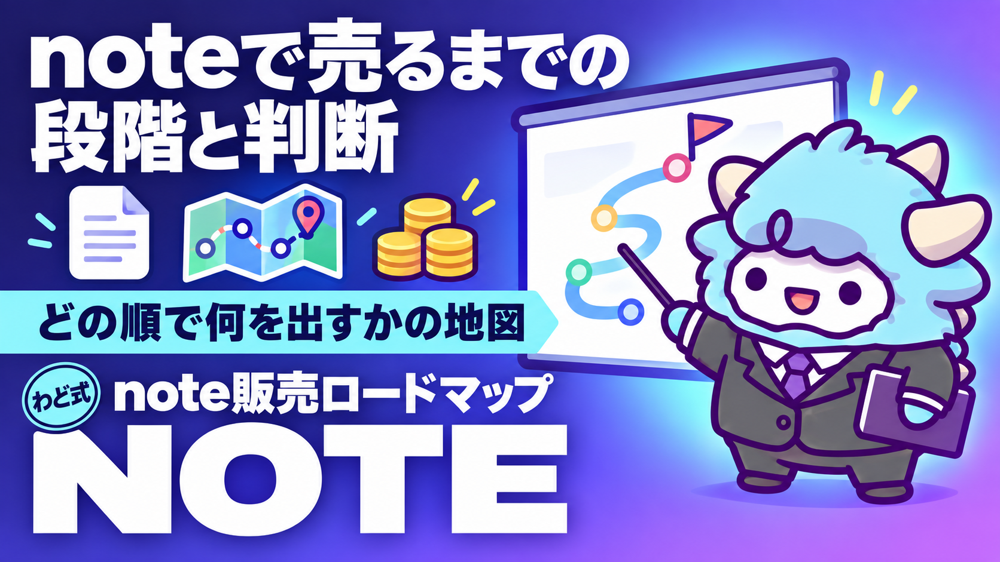

note販売攻略ロードマップ
noteで売るまでの道筋（8/12 教材）
このページが特典の本体です。下へスクロールして使ってくださいnote販売攻略ロードマップ
このロードマップを使うと、noteで初めて記事を売り切るまでの手順と、次に何をすべきかの判断ができるようになります。書き方そのものより「順番」と「今どこにいるか」に絞った特典です。
はじめに
わどです。note販売について検索すると、見出しやタイトルの作り方といったテクニック記事は無数に出てきます。ですが、それだけを集めても売れるようにはなりません。
多くの人がつまずくのは、テクニック不足ではなく「自分が今どの段階にいて、次に何をやり、何をやらなくていいのか」が分からないことです。この特典は、その迷いを止めるための地図です。
対象はAIで収益を上げたい人、特に自分の知識や体験をnoteの有料記事として販売したい人です。
この特典の進め方
- まず全体を通しで読んでください。今日すぐ全部を実行する必要はありません
- 自分が3つの段階のどこにいるかを「3. 自分の現在地の測り方」で確かめてください
- 該当する段階の「やること」だけに集中してください。先の段階のことは今は考えなくて大丈夫です
- 詰まったら「最初に投げるプロンプト」「つまずいたときに聞くプロンプト」を使ってください
- 記事を書く工程そのもの(構成・文章化)は、note記事づくりに特化した別の特典で扱っています。このロードマップは「売るまでの道筋」に絞っています
最初のゴール(今日やる1つ)
候補ジャンルを1つか2つ、これから示す6つの判定軸で採点してください。30分もあれば終わります。まだ書き始めなくて大丈夫です。今日は「選ぶ」ところまでで十分です。
1. 順番の考え方
note販売の売上は、突き詰めるとこの掛け算で決まります。
売上 = 読者数(SNSでの集客) × 欲しい人の割合(訴求・教育) × 価格 × 買いやすさ(導線)
この式は構造理解用です。日々の実測で追う数字は「レター流入数」と「購入数(購入率)」の2つに固定してください。
そして成果の大半は、記事を書く前に決まります。ジャンル選び・コンセプト・「この人から買いたい」と思われるストーリーの3つが弱いまま執筆に入ると、どれだけ丁寧に書いても売れません。逆にこの3つが強ければ、文章が多少荒くても売れます。
このロードマップを貫く原則は1つだけです。上流(何を・誰に・なぜ自分が売るのか)に時間の7割を使う。執筆と装飾は3割でいい。
3つの段階を先に一覧にします。
| 段階 | 目指す売上の目安 | 一言でいうと | 中心作業 |
|---|---|---|---|
| Stage 1 | 0円から始めて最初の売上を作る | 型どおりに1本売り切る | ジャンル選定・コンセプト・初回の販売 |
| Stage 2 | Stage 1の続き | 売れた理由を再現する | 訴求の層別化・レター改善・販売運用 |
| Stage 3 | さらにその先 | 仕組みで売る | 商品ライン化・AIやテンプレによる工程の自動化 |
金額の目安は目標設定のためのものであり、達成の保証でも達成期間の約束でもありません。自分がどの段階かは「売上額」ではなく「再現できるか」で判定してください。まぐれの大きな売上はStage 1のままであり、理由を説明できる小さな売上こそがStage 2の入口です。
2. 各段階でやること(表)
Stage 1: 型どおりに1本売り切る
やること(順番厳守):
- ジャンルを決める(次の章の判定基準で採点してから決めます。2週間悩むくらいなら候補を2つとも採点してください)
- コンセプトを一文にする(「誰の・どんな悩みを・どう変えるか」が一文で言えるまで先に進みません)
- SNSアカウントを整える(プロフィール・固定ポストをコンセプトに一致させます)
- 販売資格ストーリーを設計する(「なぜ自分がこのテーマを売れるのか」の素材集めです)
- 一定期間、興味付けの発信をする(この期間はnoteの話を出しません)
- note本体を書く(無料部分に全力、有料部分は約束の履行に徹します)
- 販売期間を区切って実行する
- 売り切って、振り返る(数字と読者の反応を記録してから次の段階へ進みます)
判断基準:
- 迷ったら型に従ってください。アレンジが全て禁止ではありませんが、「型から外れた箇所」は自覚して1つまでにします。外れた箇所が多いと、売れなかったときに原因を特定できません
- 書き始めたくなったら止まってください。手順1から4が終わっていないのに執筆に入るのが、この段階で最も多い失敗パターンです
- フォロワー数を昇格条件にしないでください。少ないフォロワーでも訴求と教育が正しければ売れます。逆にフォロワーが多くても「欲しい状態」を作れていなければ売れません
昇格条件(次の段階へ):
- [ ] 1回の販売を最後(終了)までやり切った
- [ ] 売れた・売れなかった理由を、自分の言葉で言語化した
- [ ] 次に変える点を3つ以内に絞れている
売上額の目安に届かなくても、この3つが揃えば次の段階の作業に進んで構いません。ただし、1回目の結果によって次に戻る場所が違います。
| 1回目の結果 | 次に戻る場所 |
|---|---|
| 購入0件、レター流入もほぼ0 | ジャンルとコンセプトの見直し。需要の仮説から作り直します |
| レター流入はあるが購入0件 | レターと価格の見直し。訴求と有料ラインを直します |
| 購入が1件でもある | 次の段階へ。買ってくれた層を特定して層別の改善に進みます |
Stage 2: 売れた理由を再現する
やること:
- 1回目の実測データで訴求を層別化する(どの層に一番刺さったかを反応から特定します)
- レターを改稿する(新規で書き直すのではなく、反応が取れた部分を残して弱い部分だけ差し替えます)
- 2回目以降の販売を「運用」にする(1回目は実行するだけで精一杯ですが、2回目からはリアルタイム修正を入れます)
- 価格と商品構成を見直す(値上げ・分冊・特典の設計はこの段階から検討します)
- 発信の属人化を進める(自分の立場表明・価値観をコンテンツに載せ、「この人から買う理由」を太くします)
判断基準:
- 改善は同時に1つから3つまでにしてください。全部変えると何が効いたのか分からなくなり、前の段階に逆戻りします
- 時間配分を監査してください。自分の週の作業時間を書き出し、「コンセプト・タイトル・ストーリー・レター」側と「日常投稿の装飾・数字の監視・反応への一喜一憂」側に分類します。後者が半分を超えていたら配分を直してください
- 批判やフォロワー減は運用データとして扱ってください。販売期間中のフォロワー減少は正常な代謝です。見るべきはレターへの流入と購入率です
昇格条件(次の段階へ):
- [ ] 2回以上の販売で、事前に立てた仮説どおりの改善効果を確認できた
- [ ] 自分の作業を「自分にしかできない部分」と「手順化できる部分」に分類したリストがある
- [ ] 次の商品の構想がコンセプト一文まで書けている
Stage 3: 仕組みで売る
やること:
- 工程をマニュアル化する(Stage 2で作った「手順化できる部分」のリストを、AIや外部の手を借りられる粒度の作業手順に落とします)
- 商品ラインを作る(入口の記事、本命の記事、継続や上位の商品という順に組みます。1本のnoteの売上には天井があります)
- 販売のスケジュールをあらかじめ決める(年に何回、どの商品を、どの順で売るかを先に決め、思いつきでの販売をやめます)
- AIを工程に組み込む(プロンプトを「毎回書く」から「自分専用に調整したワークフロー」に昇格させます)
判断基準:
- 自分の時間は上流にだけ使ってください。コンセプト・ストーリー・販売の山場以外は仕組みに任せる設計を正とします
- 拡張は「同じ型の横展開」を優先してください。新しいジャンルへの参入より、当たったジャンルの中で商品を増やすほうが再現性が高くなります
- 外注や自動化は、必ず品質のチェック体制とセットにしてください。手順化できていない作業を丸投げすると、結局戻ってきます
このステージの出口は、収益がある程度安定した状態です。その先の法人化や事業拡張はこのロードマップの範囲外なので、個別に相談することをおすすめします。
3. 自分の現在地の測り方
ジャンル判定(まだ書いていない人向け)
候補ジャンルを次の6項目で採点してください(各項目を◯・△・×で判定します)。
| # | 判定軸 | 問い | ◯の基準 |
|---|---|---|---|
| 1 | 悩みの深さ | その悩みは夜眠れなくなるほどか。健康・お金・人間関係・将来への野心のどれかに触れているか | 4領域のどれかにど真ん中で当てはまる |
| 2 | 緊急性 | 「いつか」ではなく「今すぐ」解決したい人がいるか | 「今すぐ」型の悩みの生の声を実際に提示できる |
| 3 | 成果の見える化 | 結果を数字や状態の変化で示せるか | 変化の前後が一枚の絵で描ける |
| 4 | 情報の非対称性 | 無料の検索で答えが出尽くしていないか。体験談や実践知に価値が残っているか | 検索結果を実際に見て、自分の一次体験との差を言葉にできた |
| 5 | 規約・法規リスク | プラットフォームの規約や、業法に触れないか | 公式情報を実際に確認したうえで該当なし。未確認は保留にする |
| 6 | 販売資格 | 自分の実体験や生活の文脈から「自分が語る理由」を作れるか | 実測の記録(数字・記録・制作物)を提示できる |
判定ルール:
- 5と6は足切りです。ここが×なら、他が全部◯でも選びません
- 5は「思い当たらない」では◯になりません。確認した公式情報を挙げられて初めて◯です
- 1から4は「◯が3つ以上」を合格ラインにします
- 迷ったら「AI活用」と「自分の文脈」の掛け合わせを検討してください。AIを実践してきた人は、この掛け合わせで軸6を最短で満たせます
コンセプト検査(一文があるか)
コンセプトは、読者と結ぶ「期待の契約」です。次の形にできているか確認してください。
【誰】が、【本書のやり方】で、【期間・条件】のうちに、【どんな変化】を目指せる
成果を断定的に約束する言い切り表現は使いません。約束してよいのは提供する情報や手順であり、変化は「目指せる状態」として書きます。書けたら次の3点で検査してください。
- 需要検査: その変化を、お金を払ってでも欲しい人が実在するか
- 差別化検査: 同じジャンルで売れているものと約束が同じになっていないか
- 履行検査: その約束を自分は本当に果たせるか
時間配分の監査
先週の作業時間を書き出し、「コンセプト・タイトル・ストーリー・レター」側と「装飾・数字の監視・反応への一喜一憂」側に分けてください。後者が半分を超えているなら、上流に戻る合図です。
4. つまずきポイントと回避
- 執筆から始めてしまう: ジャンルとコンセプトが決まる前に書き始めると、後で全部書き直すことになります。まず選ぶ、次に決める、それから書く、の順を守ってください
- フォロワー数で判断してしまう: フォロワーが少ないから売れない、と考えるのは逆です。実際は訴求が定まらないからフォロワーが増えず、売れません。数字の前にコンセプトへ戻ってください
- 型から大きく外れてしまう: 初めての販売でのアレンジは、1つまでに留めてください。外れた箇所が多いと、結果が悪かったときに原因を特定できません
- 改善を一気に全部変えてしまう: 2回目以降の運用で、同時に変えるのは1つから3つまでです。全部変えると、何が効いたのか分からなくなります
- 感情に振り回されてしまう: 販売期間中の批判やフォロワー減少は正常な代謝です。見るべき数字はレター流入と購入率だけに絞ってください
5. 最新AI(2026年9月時点)での変わり目
2026年9月3日、OpenAIが新しいモデル「GPT-6 Astra」を発表しました(取得日2026-09-06)。今回の目玉は「画面の情報を読み取り、承認されたインターフェースを操作する」能力です。パソコン操作のベンチマークでは、前世代と比べて数値が伸びています。文書やスプレッドシート、プレゼンテーションの作成、途中で要件が変わっても対応できる複雑な作業への言及があります。
これがnote販売の実務にどう関わるかというと、Stage 3の「AIを工程に組み込む」の幅が広がるということです。これまではプロンプトで壁打ちする使い方が中心でしたが、画面を操作できるAIが一般化すると、レター改稿の下書きや進捗シートの更新、競合ジャンルの下調べといった作業をより広く任せられる可能性があります。
ただし注意点が2つあります。1つは、提供が段階的に広がっている最中で、自分のアカウントにまだ機能が出ていない可能性があることです。もう1つは、画面に表示された内容がそのまま指示として読み取られる可能性がある点です。AIに画面を操作させるときは、映すものを選んでください。
AI関連の作業を任せる仕組みそのものを整えたい場合は、Claude Codeの導入手順を扱った別の特典「Claude Code 最初の30分」から始めてください。自分の作業を継続して任せる存在を持ちたい場合は、「AI社員1人目」を参照してください。
なお、note販売はSNS運用と一体です。InstagramのストーリーズやXの投稿も、興味付け期間の温度を上げる発信として使えます。媒体が増えても、上流を先に決める順番は変わりません。
6. 次の一手
この特典は、稼ぐ順番のSTEP2(コンテンツ商品)にあたります。ジャンルとコンセプトが決まり、1本を売り切る型が見えてきたら、次はSTEP3(SNS・ローンチ)の運用化に進む段階です。
面談では、あなた専用の1枚(特注のロードマップ)を一緒に作ります。
最初に投げるプロンプト
候補ジャンルが2つか3つ出たら、次のプロンプトを使ってください。使う前に、自分で悩みの生の声を実在のポストや相談から5件以上、集めてからにしてください。AIに読者の声を創作させないでください。創作された悩みで需要を判定すると、判定そのものが狂います。
あなたはコンテンツ販売の市場分析の壁打ち相手です。
私が集めた実在の情報だけを根拠に、ジャンル候補を以下の観点で判定してください。
私が提供していない情報については、推測で埋めずに「情報不足・要収集」と出力してください。
ジャンル候補: [候補を2〜3個]
私の実体験・職歴: [書ける範囲で具体的に]
私が集めた悩みの生の声: [実在の発言の引用と、確認した場所・確認日を5件以上]
判定軸:
1. 悩みの深さ(健康・お金・人間関係・野心のどれに触れるか)
2. 緊急性(集めた声に「今すぐ」型が含まれるか)
3. 成果の見える化(変化を数字か状態で示せるか)
4. 情報の非対称性(私の一次体験に、検索で得られる情報との差分があるか)
5. 私の販売資格(実体験から「私が語る理由」を作れるか。弱ければ何の記録が不足しているか)
最後に、判定を踏まえた総合順位と、私が次に収集すべき情報のリストを出してください。
※規約・法規リスクの判定はこのプロンプトに任せません。公式情報を自分で確認し、判断がつかなければ専門家や運営に相談します。
よくある失敗 7つと直し方
- 手順を飛ばして執筆から始める → ジャンルとコンセプトを先に固定します。書き始めたくなったら、それが飛ばしているサインです
- 損失を煽って解決策を示さない → 「気づかず損している行動」を書くときは、必ず実行可能な解決策と希望をセットにします。不安にさせて終わる投稿は信頼を失います
- 存在しない感想や実績を作る → 感想・実績の紹介は実物のみにします。存在しない購入者の声を作ることは許容されません
- 「続きは有料です」で唐突に切る → 読者の「もっと知りたい」が最大化した地点に有料ラインを引きます。唐突な切り方は離脱の原因になります
- 失速してから販売を閉じる → 勢いが残っているうちに終了します。「売り切った」事実そのものが次回の資産になります
- 感想の依頼を購入直後に送る → 読者が価値を体感したタイミングまで待ちます。急ぎすぎると、薄い感想しか返ってきません
- 権利や出典の確認を後回しにする → 他者の文章や画像、データを使う場合は、書く前に引用の要件と許諾を確認します
安全に使うための注意
- プラットフォームの規約や仕様は変わります。実際に判断するときは、必ず公式ヘルプで最新を確認してください
- 投資・医療・法律などの専門領域を扱う場合は、各領域の法規制を先に確認してください。判断がつかない場合は専門家に相談してください
- 売上や収益はやり方と市場で大きく変わります。金額の目安は目標設定のためのものであり、達成の約束ではありません
- 感想や実績は実物のみを使い、許可を得てから使ってください
- AIの生成物をそのまま貼らないでください。自分の実践で検証したものだけを載せてください
- 有料部分に他者の文章・画像・データを使う場合は、引用要件と許諾を必ず確認してください
- 価格設定・販売手数料・振込スケジュール・返金対応は、必ず公式ヘルプで確認したうえでレターに明記してください
- 別端末・未ログインの状態で、表示と購入までの導線を実際に確認してください
つまずいたときに聞くプロンプト
「レターは公開したのに売れない」「反応が弱い」など、詰まったときは次のプロンプトを使ってください。誇張や、事実にない実績での説得を出力させないよう、必ず制約として明記します。
あなたは購入を迷っている読者の代弁者です。以下の商品について、
購入をためらう理由を「お金・時間・能力・成果への疑い・発信者への信頼」の5つの類型で
それぞれ2つずつ、読者の生の声のような口調で挙げてください。
商品: [コンセプト文とレターの要約]
価格帯: [ここでは金額を書かず「手頃」「中価格」などの位置づけで説明してよい]
想定読者: [読者像]
その後、各ためらいに対する回答の方向性を提案してください。
ただし、誇張・保証めいた表現・事実にない実績での説得は使わないでください。
「正直に認めたうえで条件を示す」回答を優先してください。
用語集
- レター: noteの無料で読める部分。ここで期待を作ります
- 有料ライン: 無料部分と有料部分の境目
- 訴求: 読者に「欲しい」と思わせる要素
- 3層訴求: 顕在層(既に困っている)、中間層(興味はあるが方法を知らない)、潜在層(ジャンル自体を知らない)の3つ
- コンセプト: 「誰が・どんなやり方で・どんな変化を目指せるか」を一文にしたもの
- ローンチ: 販売期間を区切って売る一連の流れ
- 昇格条件: 次の段階に進んでよいと判断するための条件
- 再現性: 同じやり方をもう一度やって、同じような結果が出るかどうか
- 損失回避訴求: 「やらないと失うもの」を伝える伝え方。必ず解決策とセットで使います
- 販売資格ストーリー: 「なぜ自分がこのテーマを売れるのか」を示す体験談
- ファネル: 表示から購入までの、だんだん人数が絞られていく流れ
- 興味付け期間: 販売の前に、読者の「欲しい」の温度を上げる期間
出す前の品質チェック(10項目)
- コンセプトを、成果を保証する表現なしで一文にできているか
- 有料ラインの位置を、実際のプレビューで確認したか
- 価格設定・販売手数料・振込スケジュールを公式ヘルプで確認したか
- 返金対応の方針をレターに明記したか
- 別端末・未ログインの状態で、表示と購入導線を確認したか
- 問い合わせ窓口をレターの末尾に明記したか
- 感想や実績はすべて実物で、掲載の許可を得ているか
- 損失回避の訴求に、解決策と希望をセットで添えたか
- 法規制のあるジャンルを扱う場合、公式情報で確認済みか
- 次回に変える点を3つ以内に絞っているか
最終チェックリスト
- [ ] 候補ジャンルを6つの軸で採点した
- [ ] コンセプトを一文にした(成果の保証表現なし)
- [ ] 販売資格ストーリーの素材を集めた
- [ ] 興味付け期間の発信を始めた
- [ ] レターの流れ(共感から有料部分への接続まで)を組んだ
- [ ] 販売期間を区切ったスケジュールを用意した
- [ ] 販売後、数字と読者の反応を記録する準備をした
- [ ] 次回の変更点を3つ以内に絞る運用にした
- [ ] 「出す前の品質チェック」10項目をクリアした
- [ ] 自分の現在地(Stage)を、売上額ではなく再現性で判定した